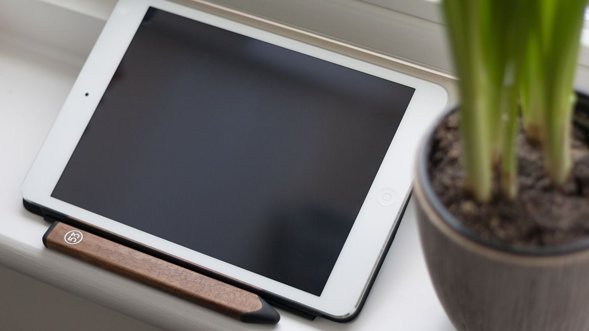
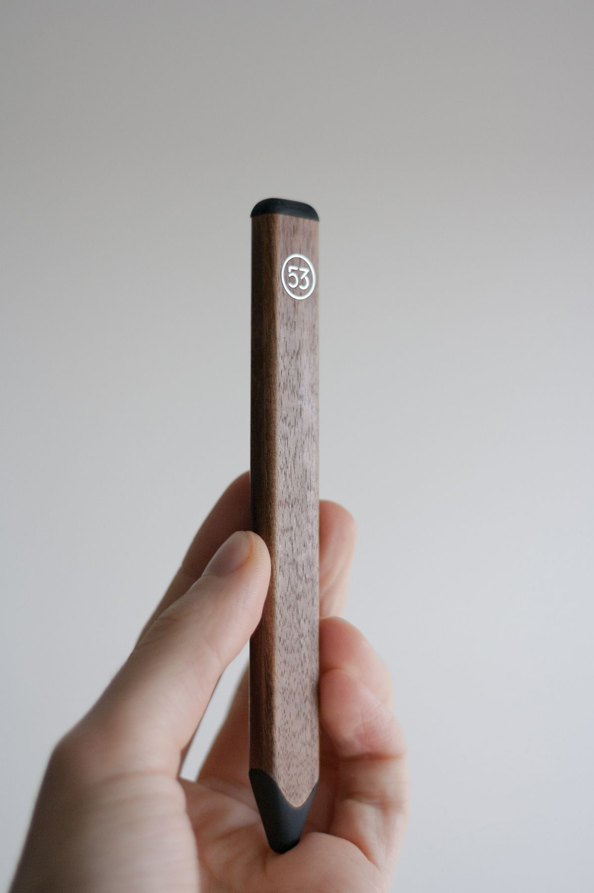

Getting started
4 min readThis is part one
Skip to part two
Skip to part three
Skip to part four
Should you have a sketchbook?
It doesn’t matter whether you define yourself as creative or not — you still have ideas. Ideas worth keeping and acting upon. These ideas sit comfortably inside your pate, but a sketchbook could extend that to a physical thing you can look at, touch, feel or even tear apart if it doesn’t really work out. You don’t have to make polished artwork every time — these are sketches, and they’re supposed to be quick and dirty.
You probably already know what a sketchbook is though, and you probably have one already. Perhaps it’s your phone or the top right corner of some important document. What I challenge you to do, however, is to pick up a physical sketchbook and explore the benefits of owning one — at least for a week or two.
A sketchbook is everything in the back of your head and on the tip of your tongue.

I should mention that sketchbooks are no longer limited to physical paper. We have moved beyond that, but they are still extremely efficient at getting your ideas visualised. As long as you’re comfortable with your canvas, you’re good to go, be it a napkin, a notebook, a tablet or your own arm.
Traditional sketching
The classic approach is pen and paper. There is no new interface to adapt to, and you can let your creativity flow. Any old notebook will do, but it very much depends on what kind of sketching you intend to do. If you are a UI designer, then it might be worth picking up a dotted sketchbook. If you’re more of an artist, then the pen might be most important. How you work and where you work is also important — I’ll get to that, but for now, keep these benefits in mind:
- You can carry it everywhere
- You can spill coffee on it
- It can take a beating
- Works without WiFi
- It’s a really really good friend
- No battery to worry about
 Amazing sketches by Sonja Langskjær
Amazing sketches by Sonja Langskjær
Digital sketching
However, carrying a sketchbook is not for everyone. If that’s you, you can go digtal! My favourite combination is simply an iPad, a stylus and the iOS application Paper. Any drawing application and stylus will do though.
For the following benefits we’ll assume you’re going with a tablet, but the benefits should extend to any digital medium:
- It’s convenient
- Digital sharing
- The undo-button
- Your stylus can be anything from a paint bucket to a pencil
- If you’re happy with the initial sketch, you just have to do the work once(!)
- You can get it printed to get that authentic feeling

Procreate is a nice option, but arguably a bit complex for sketching out basic ideas. The benefit of going digital should be ease of use. Making things look neat is not our goal right now, our goal is to get those ideas of yours in front of your eyes.
 Pencil stylus by 53
Workspace
Remember earlier, when I mentioned the importance of where you work and how you work? Adapt to your surroundings. Tablets and small sketchbooks are convenient on the go, but feel free to use more tools and larger sketchbooks when you have the opportunity. The most important thing is your ideas, and what you can comfortably use to convey those ideas.
If you’re just starting out, go with something cheap. Go with a basic notebook — you can commit to something more expensive when you’re more comfortable and determined.
 UI sketching from Paper’s Mix community
UI sketching from Paper’s Mix community
My method
Personally, I use both digital and physical sketchbooks, but my preference is by far A3 paper. With that I can create as much physical space between my ideas as I want, and not feel limited to the inside of a notebook. There is also room to rest your arms and generally have more space to work with. It comes with a feeling of freedom, but it’s not very portable. Again — it depends on where you work and how you work.
So, back to the original question:
Should you have a sketchbook?
Definitely.
Do not let your drawing skills stop you. Start now. Write down your dreams, draw an apple, write a shopping list or outline your plans for the next week. Pick up a sketchbook, and let me know how you like to sketch.